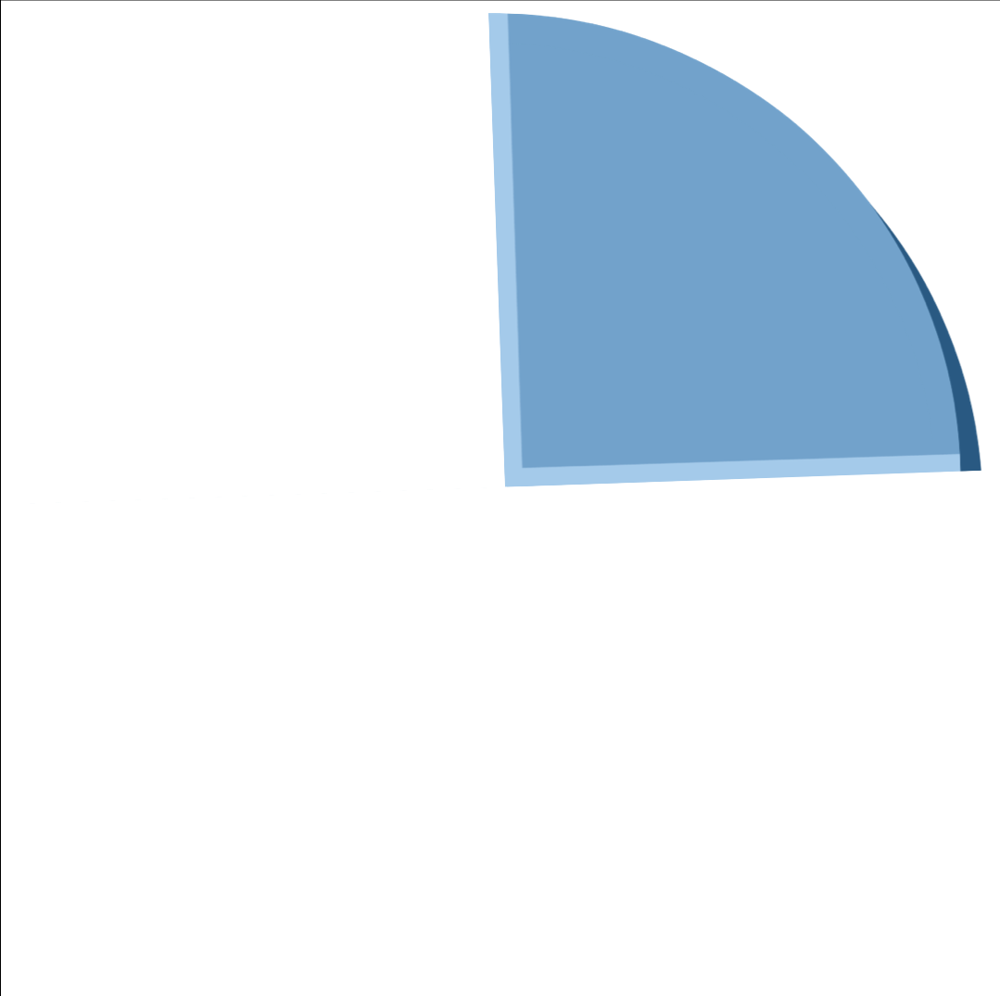
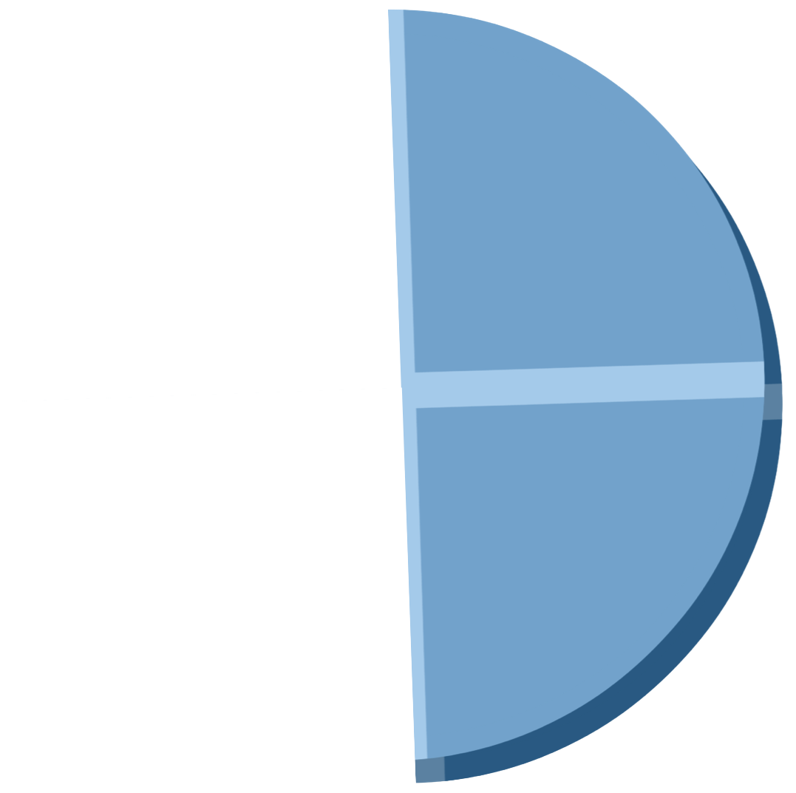
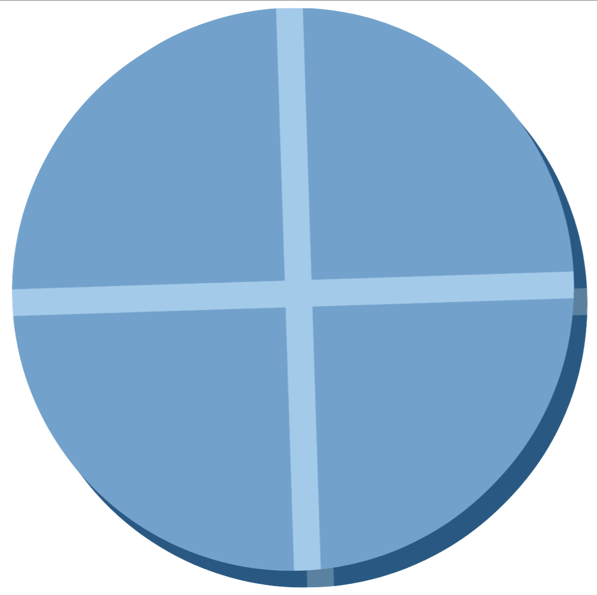

```{r}
#| eval: false
#| label: suma
2 + 2
```Quarto es un nuevo, open-source,
científico y técnico
sistema de publicación
el objetivo es hacer el proceso de crear
y colaborar sensiblemente mejor

El ecosistema de R Markdown

Quarto: La nueva generación de R Markdown

Highlights de Quarto
 Implementación coherente de funciones atractivas y prácticas en todos los productos: tabsets, plegado de código, resaltado de sintaxis, etc.
 Valores por defecto más accesibles y mejor soporte para la accesibilidad.
 Guías, especialmente útiles para los principiantes: Completado de YAML, errores de sintaxis informativos, etc.
Guías, especialmente útiles para los principiantes: Completado de YAML, errores de sintaxis informativos, etc.
 Soporte para otros lenguajes como Python, Julia, Observable, y más a través del motor Jupyter para pedazos de código ejecutables.
¿Cómo funciona?

Alineación de figuras
Las distintas preferencias de alineación de las figuras, como izquierda, centro o derecha, pueden gestionarse fácilmente en Quarto mediante los parámetros chunk fig.align = 'left', fig.align = 'center', or fig.align = 'right', respectivamente.


Quarto aplana la curva de aprendizaje

Quarto puede crecer con sus usuarios de una manera profunda

Gracias